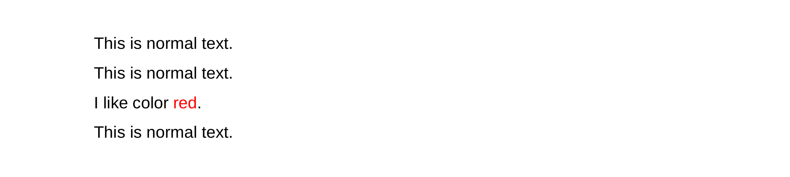

Interpreted text roles
Learn what interpreted text roles are and how to use them
Interpreted text roles are an extension mechanism for inline markup in reStructuredText.
Standard roles are described in reStructuredText Interpreted Text Roles. See the Interpreted Text section in the reStructuredText Markup Specification for syntax details. Interpreted text roles are defined in stylesheet in the same way as classes. They are generally similar to classes. The main difference between them is that classes style an entire single paragraph after you call a directive, while roles style only the portion of text selected in the appropriate way.
Using interpreted text roles
Learn what to do to use interpreted text roles in your document.
- Open any text editor.
-
Define the styles according to the JSON
syntax. Take a look at the following example:
"styles": { "redtext": { "textColor": red }, } - Save as a .json file, for example style.json.
- Then create another document in a text editor.
-
Use an interpreted text role, as in the following example:
This is normal text. .. role:: redtext This is normal text. I like color :redtext:`red`. This is normal text. - Save as an .rst file.
-
Use rst2pdf to generate a PDF.
Note: Remember to attach the stylesheet you created.You should get a result like the one in the image below:
Available attributes
Here you have listed the only attributes that work on styles when used for interpreted roles (inline styles).
fontNamefontSizetextColorbackColor
For more information about this, please check the rST docs https://docutils.sourceforge.io/rst.html